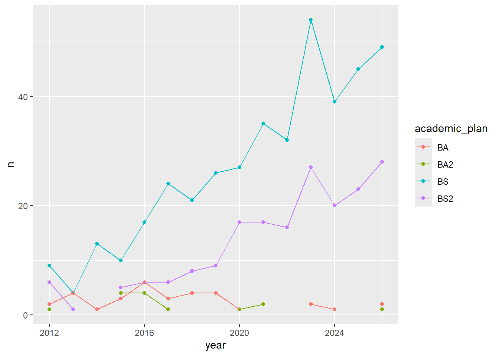
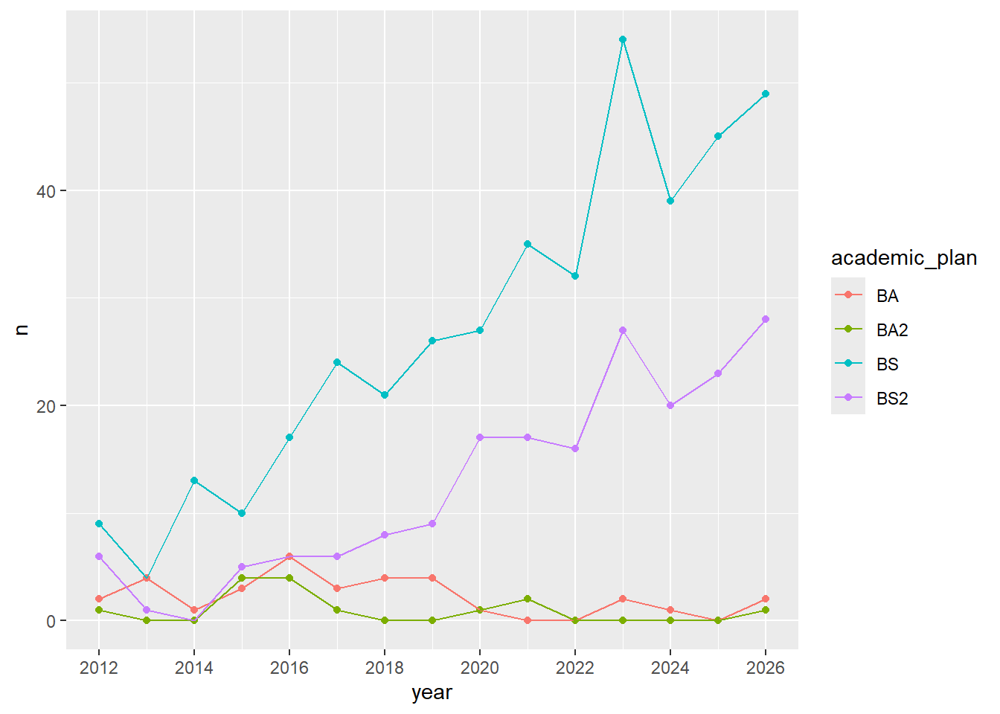
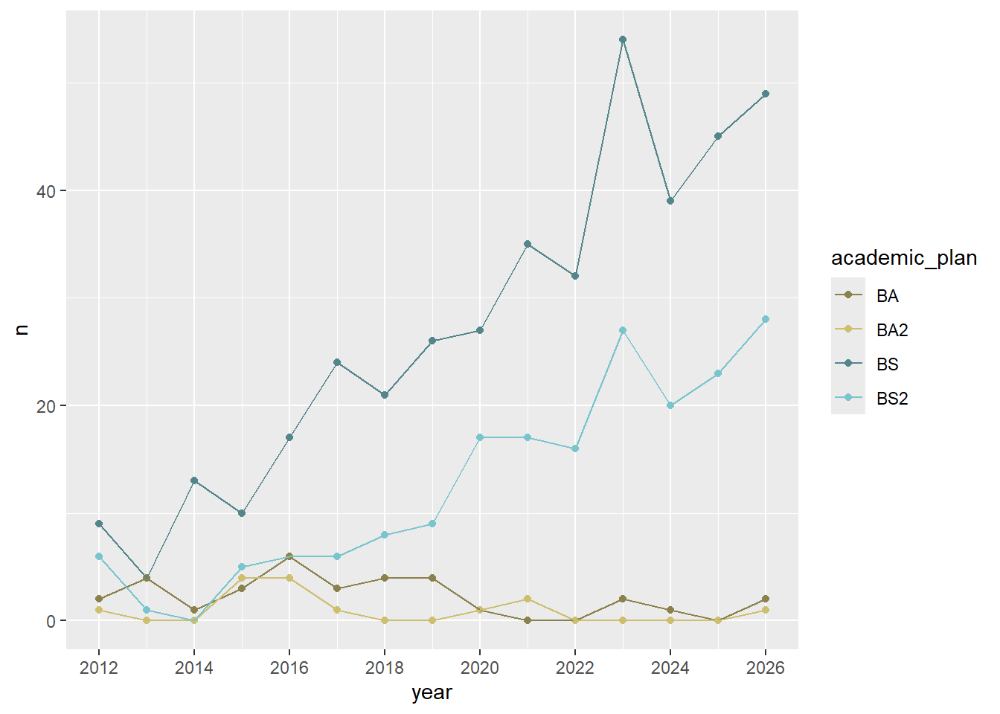
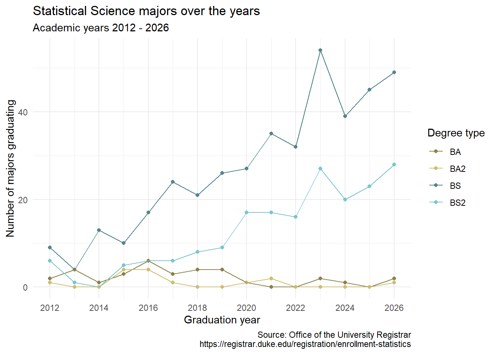
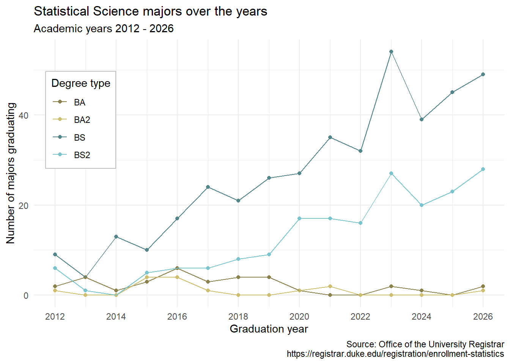
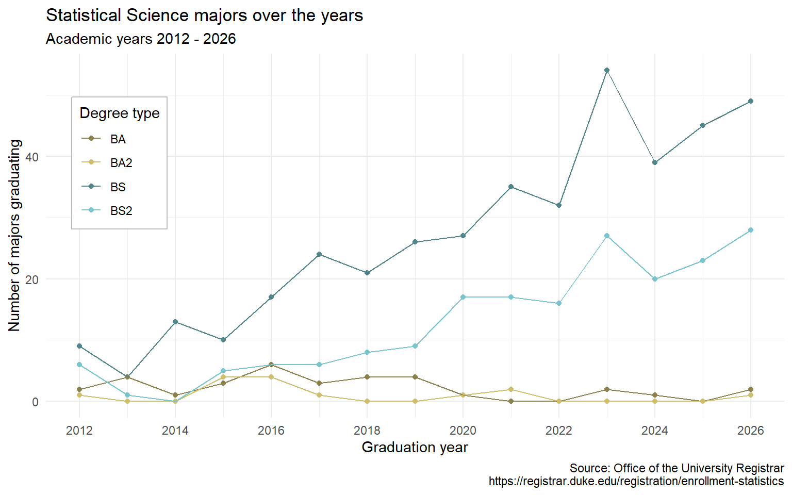

library(tidyverse)
majors <- read_csv("data/majors.csv")
statsci_majors <- majors |>
filter(
department == "Statistical Science",
academic_plan != "Minor"
)AE 05: Tidying Stat Sci majors
Application exercise
Answers
Important
These are suggested answers. This document should be used as reference only, it’s not designed to be an exhaustive key.
Data
The data come from the Office of the University Registrar.
And let’s take a look at the data.
statsci_majors# A tibble: 4 × 17
department academic_plan `2026` `2025` `2024` `2023` `2022` `2021` `2020`
<chr> <chr> <dbl> <dbl> <dbl> <dbl> <dbl> <dbl> <dbl>
1 Statistical Sc… BS 49 45 39 54 32 35 27
2 Statistical Sc… BS2 28 23 20 27 16 17 17
3 Statistical Sc… BA 2 NA 1 2 NA NA 1
4 Statistical Sc… BA2 1 NA NA NA NA 2 1
# ℹ 8 more variables: `2019` <dbl>, `2018` <dbl>, `2017` <dbl>, `2016` <dbl>,
# `2015` <dbl>, `2014` <dbl>, `2013` <dbl>, `2012` <dbl>Pivoting
Demo: Pivot the
statscidata frame longer such that:- Each row represents a degree type / year combination
yearandnumber of graduates for that year are columns in the data frame- The resulting
yearcolumn is numeric
statsci_majors |>
pivot_longer(
cols = !c(department, academic_plan),
names_to = "year",
values_to = "n",
names_transform = as.numeric
)# A tibble: 60 × 4
department academic_plan year n
<chr> <chr> <dbl> <dbl>
1 Statistical Science BS 2026 49
2 Statistical Science BS 2025 45
3 Statistical Science BS 2024 39
4 Statistical Science BS 2023 54
5 Statistical Science BS 2022 32
6 Statistical Science BS 2021 35
7 Statistical Science BS 2020 27
8 Statistical Science BS 2019 26
9 Statistical Science BS 2018 21
10 Statistical Science BS 2017 24
# ℹ 50 more rows- Your Turn: Now, repeat your code from above, but this time save the result to a new variable name.
statsci_majors_longer <- statsci_majors |>
pivot_longer(
cols = !c(department, academic_plan),
names_to = "year",
names_transform = as.numeric,
values_to = "n"
)Plotting
- Your turn: Now we will start making our plot, but let’s not get too fancy right away. Just get the geoms right for now and use default colors for different academic plans.
statsci_majors_longer |>
ggplot(aes(x = year, y = n, color = academic_plan)) +
geom_point() +
geom_line()Warning: Removed 12 rows containing missing values or values outside the scale range
(`geom_point()`).
- Question: Why was the pivot necessary in order to create this plot?
Add your response here!
- Question: What aspects of the plot still need to be updated?
Add your response here.
- Demo: Update
statsci_majors_longerto fix the discontinuities.
statsci_majors_longer <- statsci_majors_longer |>
mutate(n = if_else(is.na(n), 0, n))- Demo: Update x-axis scale such that the years displayed go from 2012 to 2026 in increments of 2 years. Do this by adding on to your pipeline from earlier.
statsci_majors_longer |>
ggplot(aes(x = year, y = n, color = academic_plan)) +
geom_point() +
geom_line() +
scale_x_continuous(breaks = seq(2012, 2026, 2))
- Demo: Update line colors using the following level / color assignments. Once again, do this by adding on to your pipeline from earlier.
“BS” = “cadetblue4”
“BS2” = “cadetblue3”
“BA” = “lightgoldenrod4”
“BA2” = “lightgoldenrod3”
statsci_majors_longer |>
ggplot(aes(x = year, y = n, color = academic_plan)) +
geom_point() +
geom_line() +
scale_x_continuous(breaks = seq(2012, 2026, 2)) +
scale_color_manual(
values = c(
"BS" = "cadetblue4",
"BS2" = "cadetblue3",
"BA" = "lightgoldenrod4",
"BA2" = "lightgoldenrod3"
)
)
- Your turn: Update the plot labels (
title,subtitle,x,y, andcaption) and usetheme_minimal(). Once again, do this by adding on to your pipeline from earlier.
statsci_majors_longer |>
ggplot(aes(x = year, y = n, color = academic_plan)) +
geom_point() +
geom_line() +
scale_x_continuous(breaks = seq(2012, 2026, 2)) +
scale_color_manual(
values = c(
"BS" = "cadetblue4",
"BS2" = "cadetblue3",
"BA" = "lightgoldenrod4",
"BA2" = "lightgoldenrod3"
)
) +
labs(
x = "Graduation year",
y = "Number of majors graduating",
color = "Degree type",
title = "Statistical Science majors over the years",
subtitle = "Academic years 2012 - 2026",
caption = "Source: Office of the University Registrar\nhttps://registrar.duke.edu/registration/enrollment-statistics"
) +
theme_minimal()
- Demo: Move the legend into the plot, make its background white, and its border gray.
statsci_majors_longer |>
ggplot(aes(x = year, y = n, color = academic_plan)) +
geom_point() +
geom_line() +
scale_x_continuous(breaks = seq(2012, 2026, 2)) +
scale_color_manual(
values = c(
"BS" = "cadetblue4",
"BS2" = "cadetblue3",
"BA" = "lightgoldenrod4",
"BA2" = "lightgoldenrod3"
)
) +
labs(
x = "Graduation year",
y = "Number of majors graduating",
color = "Degree type",
title = "Statistical Science majors over the years",
subtitle = "Academic years 2012 - 2026",
caption = "Source: Office of the University Registrar\nhttps://registrar.duke.edu/registration/enrollment-statistics"
) +
theme_minimal() +
theme(
legend.position = "inside",
legend.position.inside = c(0.1, 0.7),
legend.background = element_rect(fill = "white", color = "grey")
)
- Demo: Finally, set
fig-width: 8andfig-height: 5for your plot in the chunk options.
statsci_majors_longer |>
ggplot(aes(x = year, y = n, color = academic_plan)) +
geom_point() +
geom_line() +
scale_x_continuous(breaks = seq(2012, 2026, 2)) +
scale_color_manual(
values = c(
"BS" = "cadetblue4",
"BS2" = "cadetblue3",
"BA" = "lightgoldenrod4",
"BA2" = "lightgoldenrod3"
)
) +
labs(
x = "Graduation year",
y = "Number of majors graduating",
color = "Degree type",
title = "Statistical Science majors over the years",
subtitle = "Academic years 2012 - 2026",
caption = "Source: Office of the University Registrar\nhttps://registrar.duke.edu/registration/enrollment-statistics"
) +
theme_minimal() +
theme(
legend.position = "inside",
legend.position.inside = c(0.1, 0.7),
legend.background = element_rect(fill = "white", color = "grey")
)